Mauro Junior n.º 16
Tomás Ferreira n.º 21
PSI9
Peixe de Tobias
Sermão de Santo António aos Peixes
Padre António Vieira
S. Luís do Maranhão · 1654
Desliza para o lado
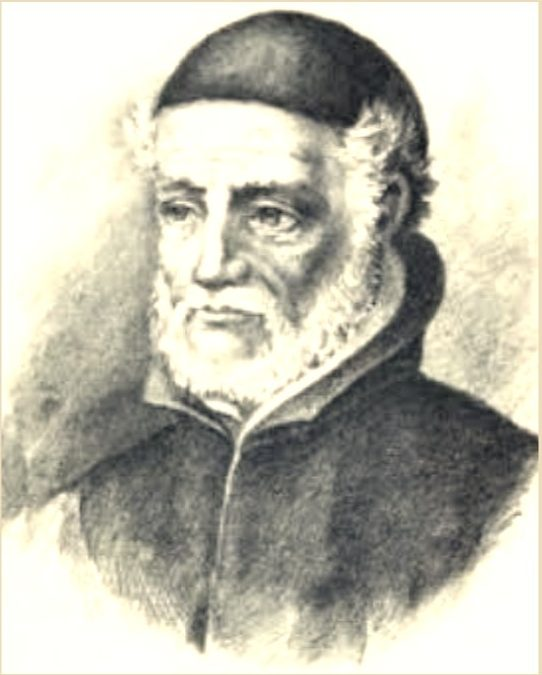
Introdução
O Sermão de Santo António aos Peixes
Pregado por Padre António Vieira em São Luís do Maranhão, em 1654.
“Vos estis sal terrae”
Conceito predicável
“Vos estis sal terrae”
“Vós sois o sal da terra” — palavras de Cristo aos discípulos
Os pregadores devem ser para a terra o que o sal é para a comida: aquilo que a conserva e a impede de apodrecer. Então, se há tantos pregadores, porque está a terra tão corrompida?
“Ou é porque o sal não salga”
A culpa é dos pregadores, que não pregam a verdadeira doutrina.
“Ou porque a terra se não deixa salgar”
A culpa é dos ouvintes, que não a querem seguir — como os colonos do Maranhão.
O Primeiro Peixe Louvado
Onde está o peixe no Sermão
Como os homens não o ouviam, Vieira fez como Santo António em Rimini: virou-se para o mar e pregou aos peixes. Ao falar dos peixes, está na verdade a falar dos homens.
O Peixe de Tobias é o primeiro peixe louvado — por isso é um exemplo a seguir.
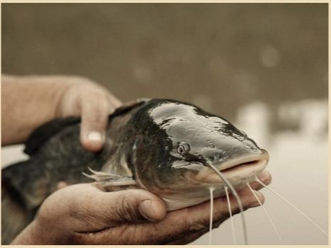
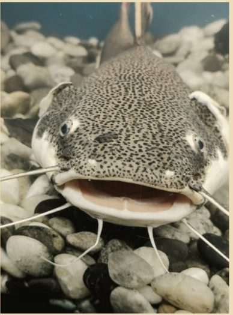
O Peixe
Livro de Tobias, capítulo 6
- Ataca Tobias no rio Tigre (atual Iraque)
- A Bíblia apenas o descreve como “grande”
- Hipótese: um peixe-gato (siluro)
- Grande porte, sem escamas
- Predador de rio, agressivo
No Sermão
Capítulo III
- Tobias lava os pés no rio e o peixe ataca-o
- O anjo Rafael manda guardar o fel e o coração
- O fel cura a cegueira do pai de Tobias
- O coração expulsa o demónio Asmodeu
“Um peixe de tão bom coração e de tão proveitoso fel, quem o não louvará muito?”
O que parecia um perigo era, afinal, uma ajuda.
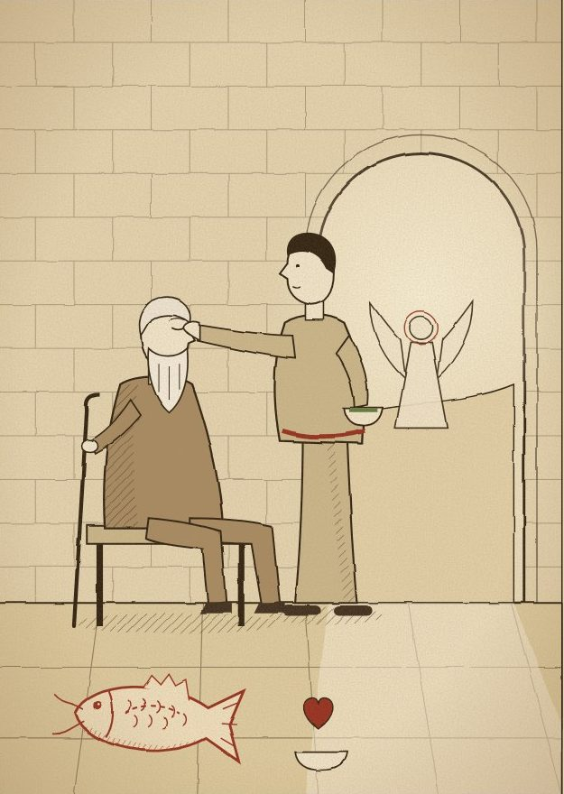
Exemplo Positivo
Vieira chama-lhe santo peixe
e diz que é grande
nas virtudes interiores. Termina com a pergunta quem o não louvará muito?
, mostrando que, entre todos os peixes, é o que mais se destaca.
A Verdadeira Grandeza
A Bíblia só lhe chama grande
, mas Vieira explica que o foi nas virtudes interiores, em que só consiste a verdadeira grandeza
.
O valor de alguém está no seu interior — no “coração” e nas “entranhas” — e não no exterior.
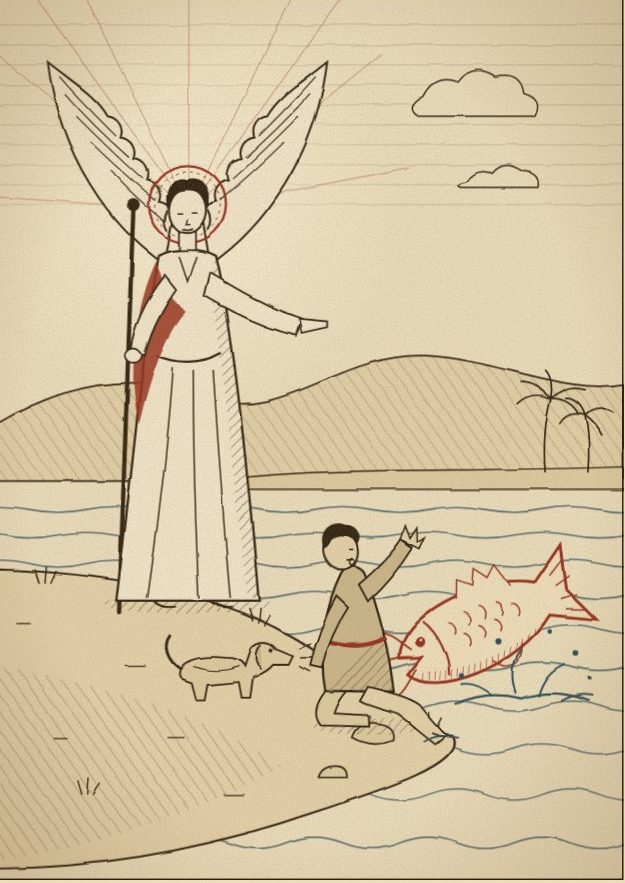
Resumo
Por palavras nossas
Tobias, com o anjo Rafael, foi lavar os pés ao rio e um peixe enorme atacou-o. O anjo mandou-o puxá-lo para terra e guardar as entranhas: o fel curou a cegueira do pai e o coração expulsou o demónio Asmodeu.
O peixe que parecia um perigo acabou por ser uma ajuda.
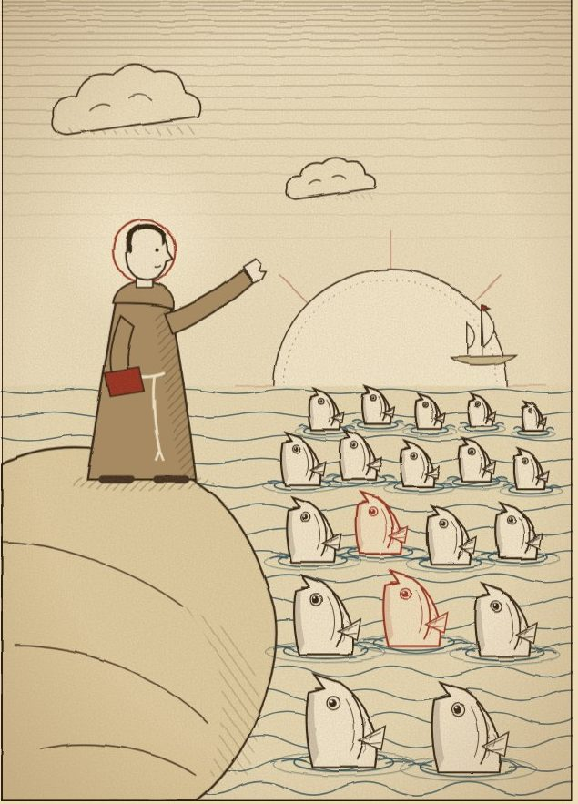
Retrato Marítimo
O peixe e Santo António
Santo António também “abria a boca” contra os hereges, que se assustavam como Tobias — mas só queria curar a sua cegueira.
A diferença
O peixe atacou quem se lavava; o santo atacava quem não se queria “lavar” dos pecados.
O Significado do Peixe
A intenção de Vieira
Qualidade humana
A verdadeira grandeza interior: a bondade de quem diz verdades difíceis para abrir os olhos dos outros. O valor está no “coração”, não no exterior.
Elogio e crítica
Elogia quem corrige os outros por amor. Critica quem persegue quem o quer ajudar, como os colonos do Maranhão contra Vieira.
“Pois a quem vos quer tirar as cegueiras, a quem vos quer livrar dos demónios, vós perseguis?!”
A frase-chave do excerto
Porque Perseguiam Vieira
A crítica aos colonos do Maranhão
Os colonizadores revoltavam-se contra Vieira porque ele denunciava:
- a escravatura dos índios
- a apropriação das suas terras
Como ninguém o escutava, pouco depois partiu para Lisboa, para tentar cortar o problema pela raiz.
O Peixe e o Homem
Significado simbólico — o peixe é o pregador
Boca aberta
A pregação firme que assusta
Fel amargo
A verdade que custa, mas cura
Coração
O amor que afasta do pecado
“Grande” por dentro
O valor está no interior
Crítica: os colonos do Maranhão perseguiam quem os queria ajudar.
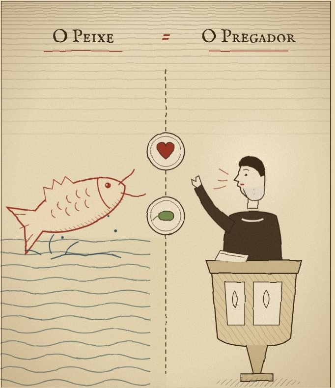
Abrir as Entranhas
O quinto símbolo
Tobias só descobriu o valor do peixe quando o abriu. Abrir as entranhas é olhar para o interior e as intenções de uma pessoa antes de a julgar.
“Abri, abri estas entranhas; vede, vede este coração.”
Fel
Líquido produzido pelo fígado e guardado na vesícula biliar. É amargo, mas curou a cegueira.
Entranhas
Os órgãos de dentro do peixe — o que não se costuma comer.
Lição
Antes de reagir, devemos perceber as verdadeiras intenções dos outros.
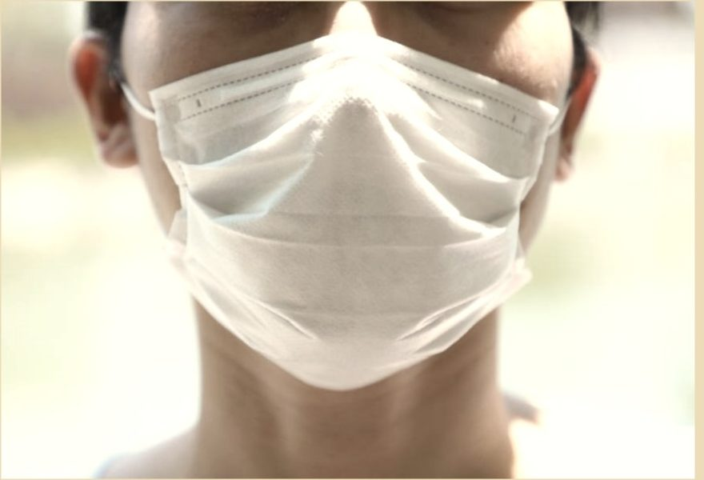
Atualidade
A mensagem ainda hoje
Exemplo: o início da pandemia de covid-19.
- Pedia-se: fiquem em casa, mantenham distâncias
- Muitos ignoraram os avisos e a pandemia alastrou
Ligação: tal como os colonos, rejeitamos quem nos avisa, mesmo quando é para nosso bem.
Recursos
Expressivos
No capítulo III
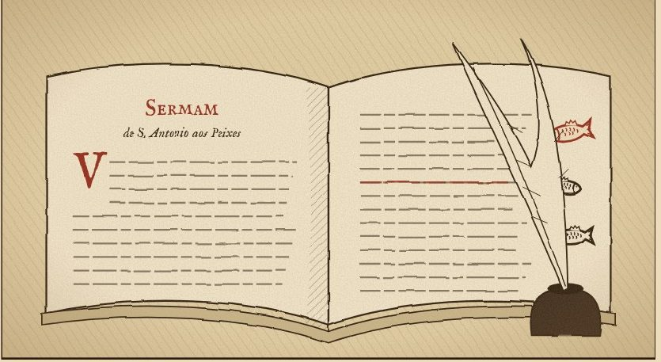
Recursos Expressivos
Os exemplos completos
Significado do Peixe
Criticar sem atacar
O Peixe de Tobias serve para distinguir quem faz o bem de quem faz o mal.
Criticar através de um peixe foi a melhor forma: as pessoas sentem-se menos atacadas.
Por isso Vieira diz “Eu não prego a vós, prego aos peixes”.
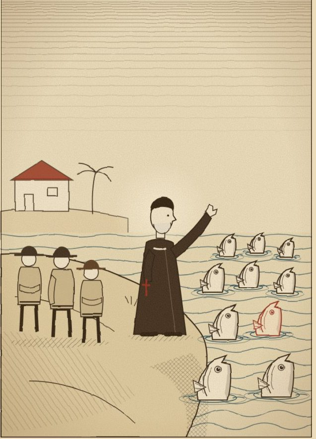
Conclusão
O que aprendemos
Mais interessante
Vieira critica os colonos de forma indireta, através de um peixe: “Eu não prego a vós, prego aos peixes”.
Lição
Nem todas as pessoas que nos contrariam nos querem mal.
“Quem nos corrige é, muitas vezes, quem mais nos quer bem.”
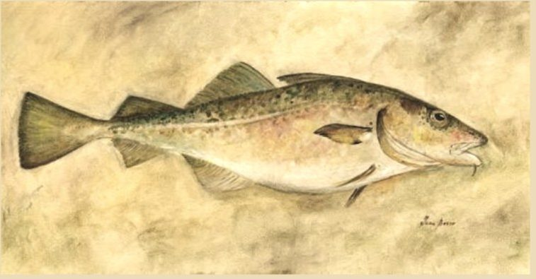
Obrigado
Mauro Junior n.º 16 · Tomás Ferreira n.º 21 · Daniel Ribeiro n.º 7 · PSI9
Fontes: Bíblia, Livro de Tobias, cap. 6 · Sermão de Santo António aos Peixes (transcrição do Agr. de Escolas Tomás Cabreiro) · agron.com.br/peixes · Imagens: Canva